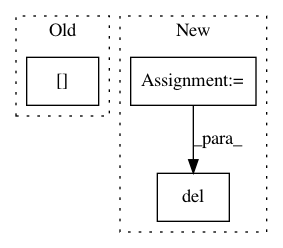

a7706fbde22887909db42f96a696437c084c05db,chainercv/evaluations/eval_detection_voc.py,,eval_detection_voc,#Any#Any#Any#Any#Any#Any#Any#Any#,11
Before Change
for bb in pred_bbox_l:
if len(gt_bbox_l) > 0:
iou = bbox_iou(gt_bbox_l, bb[np.newaxis])
gt_idx = iou.argmax()
iou = iou[gt_idx]
else:
After Change
gt_bbox_l = gt_bbox_l.copy()
gt_bbox_l[:, 2:] += 1
iou = bbox_iou(pred_bbox_l, gt_bbox_l)
gt_index = iou.argmax(axis=1)
match_ = iou.max(axis=1) >= iou_thresh
del iou
selec = np.zeros(gt_bbox_l.shape[0], dtype=bool)
for gt_idx, mc in six.moves.zip(gt_index, match_):
if mc:
In pattern: SUPERPATTERN
Frequency: 4
Non-data size: 3
Instances
Project Name: chainer/chainercv
Commit Name: a7706fbde22887909db42f96a696437c084c05db
Time: 2017-05-31
Author: Hakuyume@users.noreply.github.com
File Name: chainercv/evaluations/eval_detection_voc.py
Class Name:
Method Name: eval_detection_voc
Project Name: ray-project/ray
Commit Name: 53549314c58f33dac679616bca7eaaec2bf97a6b
Time: 2020-03-14
Author: swang@cs.berkeley.edu
File Name: python/ray/tests/test_reference_counting.py
Class Name:
Method Name: test_recursively_pass_returned_object_id
Project Name: ray-project/ray
Commit Name: 95bb0c5357d265f7e284395f6495e2ad9947bb38
Time: 2020-03-09
Author: swang@cs.berkeley.edu
File Name: python/ray/tests/test_reference_counting.py
Class Name:
Method Name: test_pass_returned_object_id
Project Name: ray-project/ray
Commit Name: 62c7ab518214286a4721dd7410978effd6d05471
Time: 2020-11-12
Author: sven@anyscale.io
File Name: rllib/models/modelv2.py
Class Name: ModelV2
Method Name: from_batch